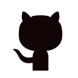

ABOUT
I'm a graduate student at Federal University of Santa Catarina (UFSC) in Florianópolis, Brazil, pursuing a master's degree in Computer Science (expected mar/2020). During my program I visited Dalhousie University in Halifax, Canada, as a research assistant at the Institute for Big Data Analytics, from Jan. 2019 to Jan. 2020.
I earned my B.S. in Computer Science from UFSC in 2018 (you can check out the thesis I wrote by following this link) and also studied abroad at University of California in Davis, USA, from 2015 to 2016.
My career and research interests span from classical machine learning techniques to deep learning, especially in Natural Language Processing (NLP) and Geographical Information Science (GIS). I love to collaborate and help other people, and I want to be always learning!
Reach out to me
| lucas [dot] petry [at] posgrad.ufsc.br | |
| Lucas May Petry | |
|  | lucaspetry |
| Scholar Profile |